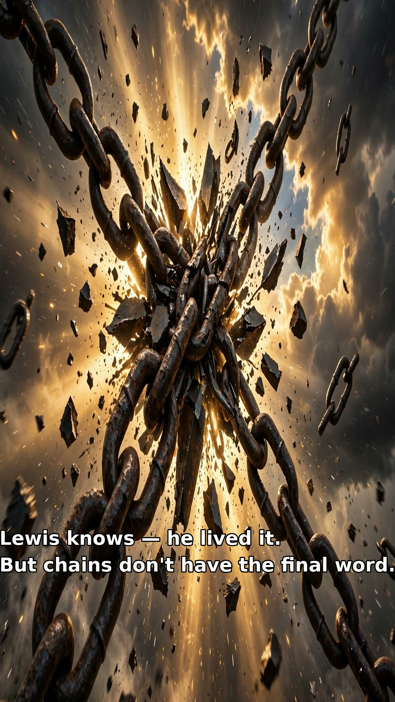

And those whom he predestined he also called, and those whom he called he also justified, and those whom he justified he also glorified.
Romans 8:30 (ESV)
Salvation is God's work of grace from beginning to end, accomplished through Christ alone and received through faith alone.
Scripture does not present salvation as a ladder of human merit, but as God's sovereign rescue of sinners. We don't climb up to God rung by rung, hoping we've done enough. He comes down, He calls, He gives new life, He declares us righteous, He keeps us — and one day He will glorify us. Every link in the chain is His work. Here is what the Bible shows, step by step.
What Scripture Shows
Human sin and inability
Romans 3:10–23 · Ephesians 2:1–3
God's eternal choice and purpose
Ephesians 1:3–6 · Romans 8:29–30 · Acts 13:48
Christ's atoning death and resurrection
Isaiah 53:4–6 · Mark 10:45 · Romans 3:24–26 · 1 Corinthians 15:3–4 · 1 Peter 1:18–21
Regeneration — the new birth
John 3:3–8 · Titus 3:4–7 · 1 Peter 1:3
Repentance and faith
Mark 1:15 · Acts 2:38 · Acts 16:30–31 · Romans 10:9–13
Justification by faith
Romans 3:28 · Romans 4:4–8 · Romans 5:1 · Galatians 2:16
Grace, not works
Ephesians 2:8–9 · Titus 3:5 · Romans 11:6
Sanctification and good works
Ephesians 2:10 · Philippians 2:12–13 · James 2:17–18
Perseverance and final glorification
John 10:27–29 · Romans 8:30, 38–39 · Philippians 1:6 · 1 Peter 1:4–5
The Biblical Order of Salvation
In Romans 8:29–30, Paul traces an unbroken chain — foreknown, predestined, called, justified, glorified — and he speaks of even the last link in the past tense, because in God's purpose it is already secure. Drawn out, this is the Bible's order of salvation:
- Election: God chooses sinners in Christ before the foundation of the world (Ephesians 1:4–5).
- Gospel calling: The good news is preached through Scripture (Romans 10:14–17).
- Regeneration: The Holy Spirit gives spiritual life; God causes the sinner to be born again (John 3:5–8; 1 Peter 1:3).
- Repentance and faith: The regenerated person turns from sin and rests in Christ — faith itself is God's gift (Acts 11:18; Ephesians 2:8–9).
- Justification: God declares the believer righteous solely through Christ's righteousness, received by faith (Romans 5:1).
- Sanctification: The believer increasingly obeys Christ; good works are the fruit, never the foundation, of salvation (Ephesians 2:10).
- Perseverance and glorification: God preserves His elect until final salvation (Romans 8:30; 1 Peter 1:5).
That believing is not a self-generated decision, but the gracious response God produces through new birth and the preached Word. All glory belongs to God alone. Soli Deo Gloria.
What do you think?
Which link in that chain brings you the most comfort — and why? Is it knowing God chose you before the foundation of the world, that He gave you new birth, that He declares you righteous in Christ, or that He will keep you all the way to glory?
We'd love to hear from you. Share your thoughts with The Hope Connection Community on Facebook, or send a prayer request through this site — you are never alone here.
Hear Lewis's story
The Hope Connection podcast — testimony and teaching on the grace that saves and keeps.